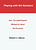

GLOBAL SOLUTIONS
An Internet Community Takes On Globalisation
Exchanging ideas on sustainable living and development at the FixGov Discussion Board
| Next
global action Take on to the next global stage. A comprehensive calendar of protest, meetings and conferences. Also a link to vigils, meetings, teach-in's calling for justice, not war after September 11. >>> |
What
is globalisation? Make up your mind and start to think about the current one-sided economic globalisation and the need for a more balanced global civic reform. Global Issues ...>>> |
A
New Democracy Are we helpless or can we do something: building an equitable, cooperative and sustainable future through global political consensus? >>> |
| EXTRA: FREE DOWNLOAD >  | FREE eBooks that make you think! |
Welcome!
This site is the result of an ongoing discussion at the FixGov discussion group (since August 2000).
The members of this group have made and discussed drafts about the seven subjects you see at the left.
All these discussions have led to the editing of a book on globalisation, aimed at giving some practical hand-outs to act upon the challenges.
______________
At this site we will present the several drafts and proposals to change our world in a positive, sustainable way
We invite you to join the ongoing discussions. Or join the global action.
We promote true understanding through the disseminaton of valuable information and resources.
______________
Links:
1. Global
Issues That Affect Everyone
2. AlterNet.org
-- Globalization
3. CorpWatch
4. Environmental
Media Services
5. Human Rights
Watch
original proposal: Adriaan Boiten (based upon John Rawls' Justice As Fairness) >>>
_________________

Fixing Government & Governance
FixGov aims to promote economic, ecological, and social justice. We are working on this site about government reform and we hope for ideas from many areas of the world. The FixGov group exists because all the efforts individuals make for sustainable living can be offset by corporate and government decisions. How can local, national, and international governments be made answerable to the people they govern instead of just the power elites?
When major polluters of the atmosphere use political muscle to escape environmental controls, what can be done by the people who have to breathe the polluted air? When municipal sewage dumping or industrial waste fouls water that is vital to human health, how can people protect themselves? When large-scale corporate agriculture and food processing distribute contaminated food and make consumers unknowing guinea pigs for genetic modification, radiation, and dangerous substances, how can they be subjected to effective control?
Join a discussion seeking ways to overcome the corruption that undermines public interest throughout the world, overthrowing or blocking democracy in some countries, making voting seem futile to many in the US, and secretly controlling such UN agencies as WTO, IMF, and the World Bank.
_____________________________________________
A Blueprint for Action in the Global Age
At the forum we're acting also. We're not just discussing on global issues, but also engaging ourselves in a consensus process, aimed at writing a book with proposals and solutions.
The origin of this online book is therefore quite unusual. Most books have one author, sometimes two, but this book is the product of collaboration by a large number of people in many countries participating in an Internet forum. Defying the adage that the only piece of good writing by committee was the King James Version of the Bible, the members of this forum set out to create a guide for reform of government at all levels from global down to local communities, and especially to counter global control by financial interests at the expense of democratic self-rule.
It all started in August 2000 when author and economist Richard Stimson set up the Internet forum “FixGov” for collaborative writing on reform of government. Many of the participants came from another forum called Alternate Culture, and quite a few had responded to an invitation at Blue Ear Forum, largely composed of journalists and writers from around the world.
Some 70 people joined in this project, including members from the United States, Canada, Mexico, United Kingdom, Netherlands, Poland, Sweden, India, Pakistan, Bangladesh, Mali, Australia, and possibly other countries (because email addresses do not always indicate the country). Messages were exchanged in English. [More ...]
_______________________________________________
Join our online discussion on globalisation >>>
Our Framework
We all agree that ...
Our purpose is to strive for a just, pluralistic and sustainable democracy.
We will try to fix government & governance in such a way that the fundamental freedom of every citizen as well as democratic equality is honoured.
Every citizen has fundamental rights and deserves respect for his opinion, because everybody has the capacity to learn, think and formulate the "just goals" he feels are true.
To establish this harmony between the different opinions we need a continuous debate with the help of "public reason" (sound arguments and information) and aimed at consensus proposals.
We view society as a collaborative community of reasonable and sensible individuals.
This collaboration leads to material production, but also to the production of ideas, cultures and ways of living.
Everybody should have the same fair chance to express their views and "produce" their own alternatives.
Our society is a diversity of communities. These communities share one interest: the guarding of just institutions that acknowledge freedom of choice, fairness of chances and civil accountability.
This will all result in a society that is integral and inclusive, with people who can collaborate together in a fair way, without loosing their self-respect.
Every citizen in our society has the same rights and must have the opportunity to make use of this rights.
This means that liberties, culture, knowledge and wealth must be distributed in a fair way.
The inequality that remains must be fair and responsible: not the result of lack of democratic freedom and choices.
We will do everything to abolish the unwanted and unjust inequality in our society and we want government to address these inequalities and to guard our freedoms.
Government should be active to practice fairness, but neutral when it comes to formulating or manipulating a favoured way of living for the people. Groups of people should choose their own way of life.
The same fairness must be established in our community of nations. Our governments should help nations that have a political, economical and/or social disadvantage.